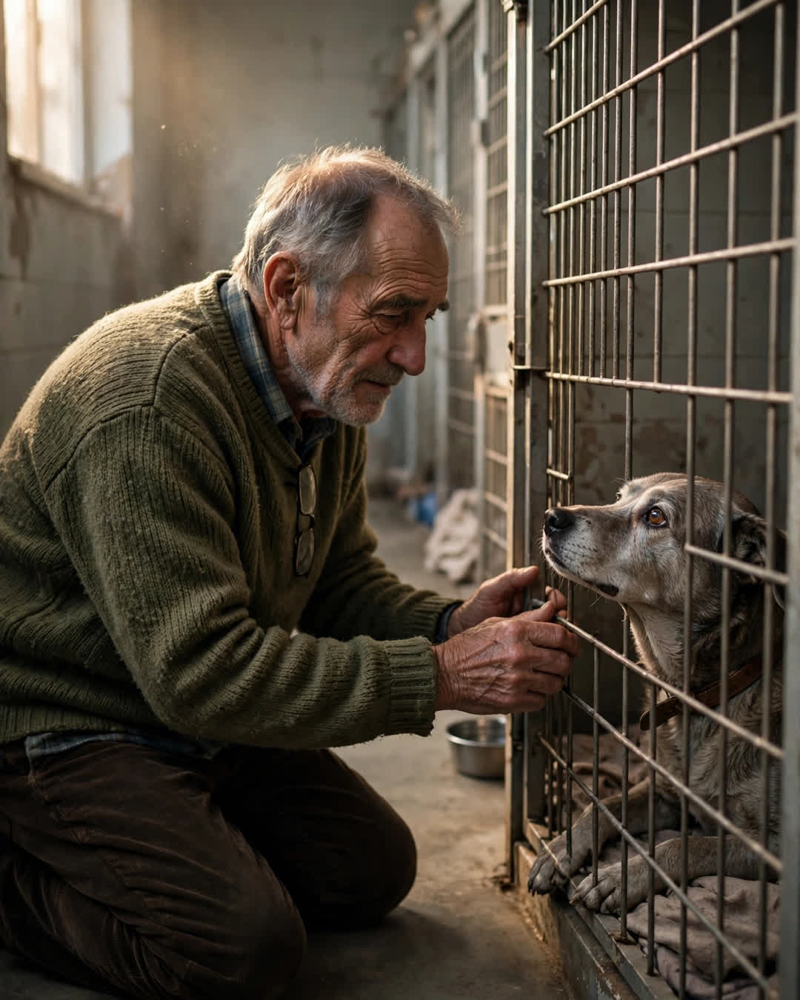

The Last Dog at the Shelter
A Clipp Kaili original story

The shelter worker tried to talk me out of her, and I understood why. Nobody adopts the last dog in the last kennel.
Her card said: "Mabel — Senior, 13. Surrendered when owner passed. Quiet. Overlooked." Thirteen years old is not an age people drive to a shelter hoping for. She lay at the back of the run on a thin blanket, gray around the muzzle, one ear folded wrong, watching the door with the flat, exhausted patience of a creature who has learned exactly what doors opening usually means: younger dogs leaving. She didn't bark when I stopped. She didn't come forward. She just lifted her head, looked at me once, with eyes like a closed shop — and laid it back down. The worker, kind and tired, said what she was trained to say.
"Sir, we've got a wonderful six-month-old in run four—"
"I didn't come for wonderful," I said. "I came for her."
My name is Walter Crane. I was seventy-four, a widower of eight months, and my house had become the quietest place on earth. My wife died in April, and by December I had learned every sound grief makes: the refrigerator hum, the clock, my own breathing in rooms built for two voices. My daughter kept sending me links to puppies. Puppies are beginnings. I was looking for someone else who knew what it cost to be the one still here.
In the paperwork room, the volunteer pulled Mabel's surrender file. The family who'd brought her in had left her belongings: a collar, a blanket, and a vet tag with her information. The volunteer turned the tag over in her hand and stopped.
"Sir," she said quietly. "You should see this."
The tag was old, stamped metal, worn smooth at the edges. It read: "MABEL. If lost, please call — E. CRANE." And beneath it, an address. My address. My old address, from the house on Willow Lane where my wife and I lived for thirty years before we moved.
My wife's name was Ellen. E. Crane. In 1998, before we moved, Ellen had fostered senior dogs through that same shelter — a fact I had somehow misplaced in fifty years of marriage, the way husbands misplace whole cathedrals of their wives' kindness. For one winter, long ago, a young stray had lived in our laundry room, been fed from our table, and gone on to another family carrying my wife's name on her tag. The shelter's file confirmed it in Ellen's own handwriting, scanned and yellowed: "Mabel — sweet old soul. Somebody love her after me."
Somebody love her after me.
I sat down hard in the paperwork room, an old man holding a dog tag his dead wife had written, while thirteen-year-old Mabel — the same dog, returned to the shelter all these years later by the passing of a second owner — waited in the last kennel to be loved after her, exactly as instructed.
I signed everything they put in front of me.
Mabel rode home in my passenger seat, sitting up straight as a churchgoer, that one ear folded wrong. She sleeps now on Ellen's side of the house — her own bed, her own blanket, beside my chair, where the quiet used to live. The quiet doesn't live here anymore. In its place there is snoring. There is a slow gray muzzle on my knee when the evenings get long. There are two old survivors keeping each other's hours.
People ask how I found her, out of all the dogs in all the shelters, and I tell them the truth, which is also the mercy of it:
I didn't find her.
My wife sent her — twenty-six years early, with her name already on the tag, addressed to a lonely house she somehow knew was coming.
This story is a work of fiction, written to touch hearts and bring families closer.
← Back to all stories